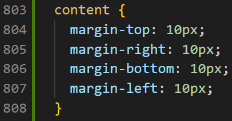
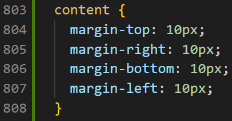
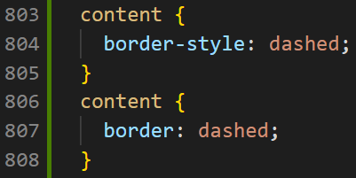
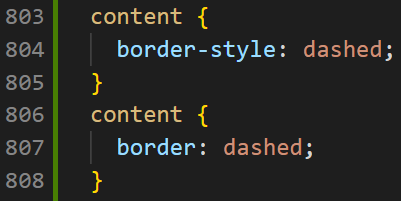
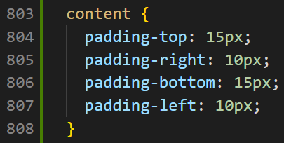
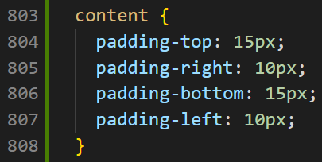

What is the difference between Margin, Border, and Padding?
Margin, Border, and Padding in CSS are used to design and layout elements. They create spaces around the elements, inside and outside of any defined borders. A CSS box model shows exactly what we are looking at (see below picture). Now let’s go through one by one and see what they are in detail!

Margin
Margin is the space around the border of an element and up to the edge of the website page. In another words, the margin property controls the space outside an element. Here is an example. You can see there is a space between the border of the content and the edge of the page and has a margin of 10 pixels. I have also added how this is coded below.
 

Border
Border is used to give visible outline of an element. Border is valuable for making the content or an image to stand out. There are many different types of borders such as; dotted border, dashed border, solid border, etc. You can also make a rounded border by controlling the border radius and you can add the thickness and the colours to the borders as well. Here is an example of different types of borders. I have also added how this is coded below.
Note that I have used two types of properties here - "border-style" and "border". You can use both of these properties to make a dashed border but the main difference between them is: The "border-style" property is a shorthand property for setting "border-top-style", "border-right-style", "border-bottom-style" and "border-left-style" in a single declaration. Whereas the "border" property is a shorthand property for setting the same width, colour, and style for all four borders of a box.
 

Padding
Padding is the space between the content and the border of an element. Padding is valuable for aligning the spaces perfectly for the content to stand out. Here is an example. You can see there is a space between the content and the border and has a padding of 10 pixels on the left and the right side and 15 pixels on the top and the bottom side. I have also added how this is coded below.
 

If you still don't get it, think of it as if you bought a lego for yourself. The lego pieces are considered as "Content." The plastic bag that includes the lego pieces and the space between them is considered as "Padding." The plastic bag is considered as "Border." The space between the plastic bag and the actual lego box is considered as "Margin."